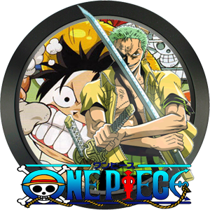
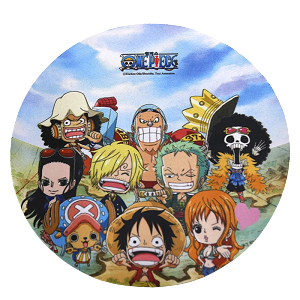

Camisas
Camisas estilizadas de One Piece para você aproveitar o melhor dos nossos nakamas.

Bonecos
Bonecos decorativos de One Piece para você decorar seu quarto, com os bonecos mais irados.
Zoro dando a vida por luffy. A melhor cena de todos os tempos.
No episódio 377 o personagem Zoro, quase da sua vida por Luffy, chegando perto da morte em uma cena épica.
Luffy ativando o modo gear 2º pela primeira vez. em uma luta épica no episodio 272.
No episódio 273 luffy apresenta pela primeira vez seu modo gear second, (ou segunda marcha em português) e consegue derrotar o vilão da saga Blueno.
Sanji Vs Enel. Uma das cenas mais épicas.
A cena em que Sanji confronta Enel, salvando seus companheiros e levando um choque do deus do raio diretamente em seu corpo, mostrando todo seu poder no episódio 182 do anime.